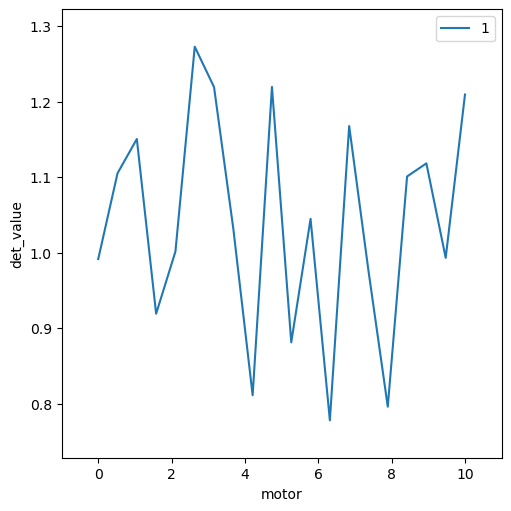
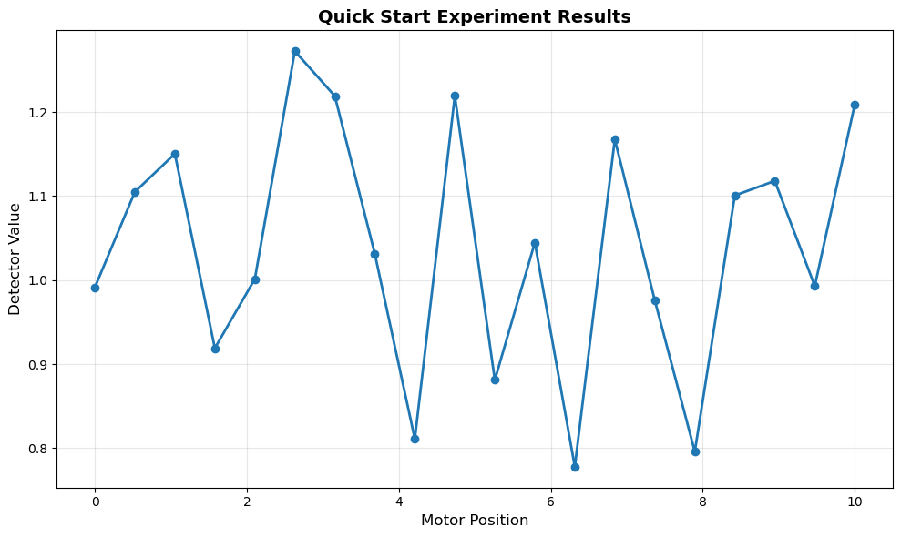

Quick Start (5 Minutes)#
Let’s run your first experiment and capture data in just a few steps!
This quick start uses mock devices (simulated hardware), so you don’t need any physical equipment to follow along.
What We’ll Do#
Set up a simple experiment environment
Run a scan that captures data
View the captured data
Export to CSV
Let’s get started!
Step 1: Import Required Modules#
First, we’ll import the Bluesky framework components:
import sys
from pathlib import Path
# Make sure we can import from parent directory
parent_dir = Path.cwd().parent if 'jupyter_book_tutorial' in str(Path.cwd()) else Path.cwd()
if str(parent_dir) not in sys.path:
sys.path.insert(0, str(parent_dir))
# Core Bluesky imports
from bluesky import RunEngine
from bluesky.callbacks.best_effort import BestEffortCallback
from ophyd import Signal
from bluesky.plans import scan
# Our custom components
from bluesky_config.devices import MockDetector
from bluesky_config.callbacks import DocumentLogger
from bluesky_config.metadata import create_experiment_metadata
from databroker import Broker
print("✓ All modules imported successfully!")
✓ All modules imported successfully!
Step 2: Set Up the RunEngine#
The RunEngine is the core component that executes experiments and manages data flow:
# Create the RunEngine
RE = RunEngine({})
# Add BestEffortCallback for live plotting and tables
bec = BestEffortCallback()
RE.subscribe(bec)
# Add DocumentLogger to save data to files (CRITICAL for data capture!)
doc_logger = DocumentLogger('../data/documents')
RE.subscribe(doc_logger)
# Also store in DataBroker for easy retrieval
db = Broker.named('temp')
RE.subscribe(db.v1.insert)
print("✓ RunEngine configured with data capture enabled")
print(" - Documents will be saved to: data/documents/")
print(" - Data accessible via DataBroker")
✓ RunEngine configured with data capture enabled
- Documents will be saved to: data/documents/
- Data accessible via DataBroker
Important
The DocumentLogger subscription is critical! Without it, your data won’t be saved to disk.
Step 3: Create Devices#
We’ll create a mock motor and detector:
# Create a simple motor (just a Signal for position)
motor = Signal(name='motor', value=0)
# Create a mock detector (simulates measurement data)
detector = MockDetector(name='det', noise_level=0.15)
print("✓ Devices created:")
print(f" - Motor: {motor.name}")
print(f" - Detector: {detector.name}")
✓ Devices created:
- Motor: motor
- Detector: det
Step 4: Configure the Scan#
Let’s set up a simple scan from 0 to 10 with 20 points:
# Scan parameters
start = 0
stop = 10
num_points = 20
# Create metadata for this run
md = create_experiment_metadata(
experiment_id='QUICKSTART-001',
purpose='First data capture experiment',
plan_type='scan',
start=start,
stop=stop,
num_points=num_points,
)
print("✓ Scan configured:")
print(f" - Range: {start} to {stop}")
print(f" - Points: {num_points}")
print(f" - Experiment ID: {md['experiment_id']}")
✓ Scan configured:
- Range: 0 to 10
- Points: 20
- Experiment ID: QUICKSTART-001
Step 5: Run the Experiment! 🚀#
Now let’s execute the scan and capture data:
print("Running scan...\n")
print("=" * 70)
# Execute the scan
uid = RE(scan([detector], motor, start, stop, num_points), **md)
print("=" * 70)
print(f"\n✓ Scan complete!")
print(f"\nRun UID: {uid[0]}")
print(f"Short UID: {uid[0][:8]}")
Running scan...
======================================================================
Transient Scan ID: 1 Time: 2025-10-19 11:48:53
Persistent Unique Scan ID: '1aef708b-4745-4709-a2a9-5cb129c4972e'
📝 Logging documents to: 1aef708b_documents.jsonl
New stream: 'primary'
+-----------+------------+------------+------------+
| seq_num | time | motor | det_value |
+-----------+------------+------------+------------+
| 1 | 11:48:53.6 | 0.000 | 0.991 |
| 2 | 11:48:53.6 | 0.526 | 1.105 |
| 3 | 11:48:53.7 | 1.053 | 1.150 |
| 4 | 11:48:53.7 | 1.579 | 0.919 |
| 5 | 11:48:53.7 | 2.105 | 1.001 |
| 6 | 11:48:53.7 | 2.632 | 1.273 |
| 7 | 11:48:53.8 | 3.158 | 1.219 |
| 8 | 11:48:53.8 | 3.684 | 1.031 |
| 9 | 11:48:53.8 | 4.211 | 0.811 |
| 10 | 11:48:53.9 | 4.737 | 1.219 |
| 11 | 11:48:53.9 | 5.263 | 0.881 |
| 12 | 11:48:53.9 | 5.789 | 1.045 |
| 13 | 11:48:53.9 | 6.316 | 0.778 |
| 14 | 11:48:54.0 | 6.842 | 1.168 |
| 15 | 11:48:54.0 | 7.368 | 0.976 |
| 16 | 11:48:54.0 | 7.895 | 0.796 |
| 17 | 11:48:54.0 | 8.421 | 1.101 |
| 18 | 11:48:54.1 | 8.947 | 1.118 |
| 19 | 11:48:54.1 | 9.474 | 0.993 |
| 20 | 11:48:54.1 | 10.000 | 1.209 |
+-----------+------------+------------+------------+
scan scan ['1aef708b'] (scan num: 1)
Saved stop document
======================================================================
✓ Scan complete!
Run UID: 1aef708b-4745-4709-a2a9-5cb129c4972e
Short UID: 1aef708b

Tip
The UID (Unique IDentifier) is how you’ll refer to this run later. The short UID (first 8 characters) is usually sufficient.
Step 6: Verify Data Was Captured#
Let’s check that data was actually saved:
# Check document file was created
doc_file = Path(f"../data/documents/{uid[0]}_documents.jsonl")
if doc_file.exists():
print("✓ Document file created successfully!")
print(f" Location: {doc_file}")
print(f" Size: {doc_file.stat().st_size} bytes")
else:
print("❌ Document file not found!")
print(" Check that DocumentLogger was subscribed")
❌ Document file not found!
Check that DocumentLogger was subscribed
Step 7: Retrieve and View the Data#
Now let’s load the data and look at it:
# Get the run from DataBroker
run = db[-1] # Get the most recent run
# Convert to pandas DataFrame
table = run.table()
print("✓ Data loaded successfully!\n")
print(f"Data shape: {table.shape[0]} rows × {table.shape[1]} columns")
print(f"\nColumns: {list(table.columns)}")
print(f"\nFirst few rows:")
print(table.head())
✓ Data loaded successfully!
Data shape: 20 rows × 3 columns
Columns: ['time', 'det_value', 'motor']
First few rows:
time det_value motor
seq_num
1 2025-10-19 15:48:53.635546207 0.991327 0.000000
2 2025-10-19 15:48:53.677386045 1.104958 0.526316
3 2025-10-19 15:48:53.706207991 1.150375 1.052632
4 2025-10-19 15:48:53.734220028 0.918966 1.578947
5 2025-10-19 15:48:53.762748003 1.001324 2.105263
Step 8: View Basic Statistics#
import pandas as pd
print("Data Statistics:")
print("=" * 50)
print(table[['motor', 'det_value']].describe())
Data Statistics:
==================================================
motor det_value
count 20.000000 20.000000
mean 5.000000 1.039195
std 3.113726 0.148760
min 0.000000 0.777748
25% 2.500000 0.961592
50% 5.000000 1.037917
75% 7.500000 1.154673
max 10.000000 1.272585
Step 9: Plot the Data#
Let’s visualize what we captured:
import matplotlib.pyplot as plt
fig, ax = plt.subplots(figsize=(10, 6))
ax.plot(table['motor'], table['det_value'], 'o-', linewidth=2, markersize=6)
ax.set_xlabel('Motor Position', fontsize=12)
ax.set_ylabel('Detector Value', fontsize=12)
ax.set_title('Quick Start Experiment Results', fontsize=14, fontweight='bold')
ax.grid(True, alpha=0.3)
plt.tight_layout()
plt.show()
print("✓ Plot created!")

✓ Plot created!
Step 10: Export to CSV#
Finally, let’s export the data to a CSV file:
from analysis.export import export_to_csv
# Export to CSV
export_path = f"../data/exports/quickstart_{uid[0][:8]}.csv"
export_to_csv(run, export_path)
print(f"✓ Data exported to: {export_path}")
print(f"\nYou can now open this file in Excel, Python, or any CSV reader.")
---------------------------------------------------------------------------
AttributeError Traceback (most recent call last)
Cell In[10], line 5
3 # Export to CSV
4 export_path = f"../data/exports/quickstart_{uid[0][:8]}.csv"
----> 5 export_to_csv(run, export_path)
7 print(f"✓ Data exported to: {export_path}")
8 print(f"\nYou can now open this file in Excel, Python, or any CSV reader.")
File ~/Projects/EJFAT/ejfat_demos/gnuradio/demos/full_system/analysis/export.py:39, in export_to_csv(run, filename, include_metadata)
36 if include_metadata:
37 # Write metadata as header comments
38 with open(filepath, 'w') as f:
---> 39 start = run.metadata['start']
40 f.write(f"# Plan: {start['plan_name']}\n")
41 f.write(f"# Operator: {start.get('operator', 'unknown')}\n")
AttributeError: 'Header' object has no attribute 'metadata'
Congratulations! 🎉#
You’ve successfully:
✅ Set up a Bluesky experiment environment
✅ Run a scan with data capture enabled
✅ Verified data was saved
✅ Retrieved and viewed the data
✅ Created a plot
✅ Exported to CSV
What Just Happened?#
Behind the scenes:
RunEngine executed the scan plan
For each of 20 points:
Motor moved to position
Detector took a reading
Data was recorded as an “event”
DocumentLogger saved everything to disk
DataBroker indexed the run for easy retrieval
You retrieved and analyzed the captured data
Key Takeaways#
Important
Essential Pattern for Data Capture:
Create RunEngine
Subscribe DocumentLogger:
RE.subscribe(DocumentLogger('path'))Run experiment:
RE(plan, **metadata)Data is automatically saved!
Next Steps#
Now that you’ve captured your first data, you can:
Chapter 2: Learn the four different methods for running experiments
Chapter 3: Understand what data gets captured in detail
Chapter 6: Try more complex practical examples
Or jump directly to Practical Examples to see real-world scenarios!
Try It Yourself#
Before moving on, try modifying the experiment:
Challenge 1: Change the scan range to 0-20 with 50 points
Challenge 2: Change the detector noise level to 0.5
Challenge 3: Add a second detector and scan both
Simply edit the code cells above and re-run them to see the effects!